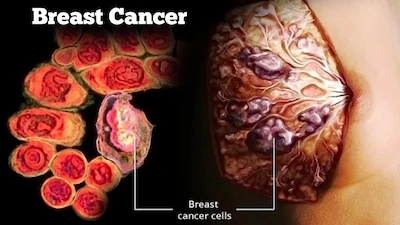

Doris Nnenna Amuji
About Me
My name is Doris Nnenna Amuji, commonly known as DNA. I am a Biochemist and scientific researcher currently I intend to investigate potential ways by which infectious diseases could impact breast cancer in diverse populations. As a young researcher I have carved a niche for myself in the field area of molecular oncology. Interestingly, I have co-authored over ten papers and has equally served as a peer-reviewer for both international and local journals. My hobbies include travelling, singing, writing, and studying.
Breast Cancer

Breast cancer is a formidable disease that is frequently diagnosed among women. it is the leading cancer-related death in females. according to GLOBACOM about 32,000 are projected to die from breast cancer in 2050. The risk factors of breast cancer includes but not limited to hormones-related, age-related, sex, lifestyle, genetics etc.